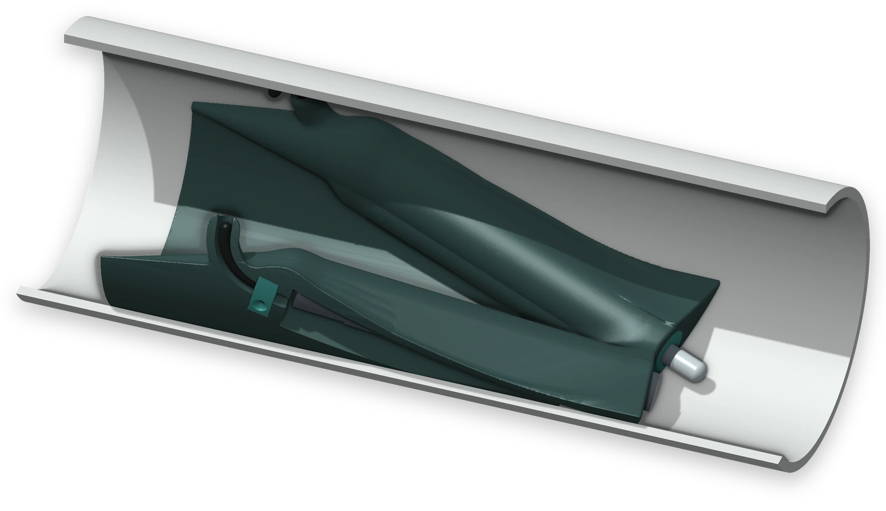
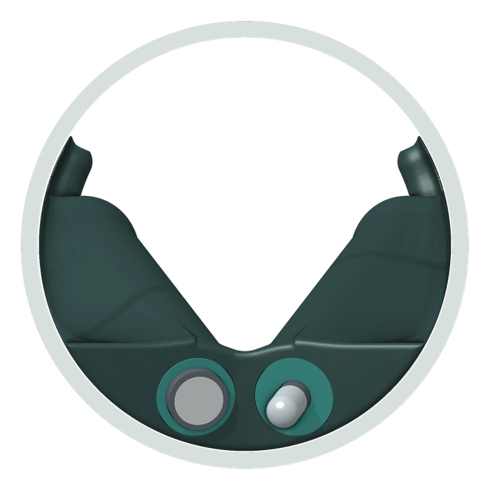

Sensor mount for gravity sewers
Sensor Fort
How to install pH, EC and other water quality sensors in a gravity sewer, and keep them working. The only mount that hides everything but the sensor tip.
Patent-pending design

Installing a pH, EC or dissolved oxygen sensor in a gravity sewer is hard, and the hard part isn’t the sensor. It’s how you hold it in the flow. Rag wraps around anything that divides the flow, grit buries whatever sits in slow water, fat coats whatever sits at the waterline, and low flows leave sensors dry.
Sensor Fort is a low moulded saddle that sits on the bottom of the pipe (the invert) at a manhole. Two sensors lie inside it, pointing downstream. The flow rides up the saddle, spills over a lip and runs fast across their tips. Nothing else is exposed.
EDS designed Sensor Fort and builds it in Australia, drawing on more than 30 years of experience and knowledge of sewers, to solve that one problem. It needs nothing to run except your sensors: no power, no pump and no moving parts. It works with 99% of the sensors on the market, as tested by EDS, so you keep the ones your network already trusts. And it’s designed to stay in the sewer for 12 months between visits. The design is patent pending.
One body. Two protected bays.
- 1Feathered nose
- 2Cable hood
- 3Shoulder over a sensor bay
- 4Valley
- 5Cable clamp
- 6Spill lip
- 7Stern face
- 8Sensor tips
Four ways to hold a sensor in a sewer.
None of them works, and none ever will.
In a gravity sewer the weak point is the mount, not the sensor. Rag wraps around anything that divides the flow. Grit buries whatever sits in slow water. Fat coats whatever sits at the waterline. And low flows leave sensors dry. Each of these fails for a mechanical reason that no sensor can overcome.
What doesn’t work
Needs regular cleaning
Pole, chain or pendulum from above
Rag catches where the pole pierces the surface, and on the sensor itself. A ring of fat forms at the waterline.
The best of the four, and it still rags
Sensor strapped to a band
Rag catches on the sensor body, the clamps and the cable. Silt settles in the lee of the sensor.
Unreliable in a sewer
Float on a tether
Rag collects on the float and its tether. At low flow the float grounds or tips over.
Needs a pump, power and visits
Pumped bypass to a flow cell
The intake blocks, and the tubing and the flow cell foul between visits.
What does

The idea
Hide everything but the tip.
So we changed the mount, drawing on more than 30 years of working in sewers. Sensor Fort gives rag nothing to wrap around, keeps every cable out of the flow and leaves no sensor body to be buried. No other mount does all three, which makes it the only solution for analytical sensors in a gravity sewer network.
Patent-pending design
- RagNo leading edge. The saddle spans the invert, so flow and rag can only pass over it.
- GritThe tips sit just below the spill lip, where fast water keeps grit moving.
- Low flowEach sensor lies 15° tip down, so its tip is the last part to go dry.
- UpkeepIt needs nothing to run except your sensors: no pump, no power and no moving parts. Designed for 12 months between visits.
Shaped so the flow keeps the tips clear.
Sensor Fort works by shape alone. The flow rides up a feathered nose, gathers in the valley between two shoulders, spills over a lip and runs fast across the sensor tips. The same shape keeps every sensor body, clamp and cable out of the stream.
- 1Feathered nose
- 2Cable hood, clear of the stream
- 3Valley for low flows
- 4Sensor inside the shoulder
- 5Spill lip
- 6Sensor tips in fast water
Six design rules
- Rule 1No leading edge
Rag catches where flow divides around an edge. The saddle spans the invert, so flow can only pass over it.
- Rule 2Only the tips are exposed
Sensor bodies, clamps and cables stay inside. The flow side has no seam, hole or fastener.
- Rule 3Tips at the lowest point
Each sensor lies 15° tip down, so its tip is the last part of the installation to go dry.
- Rule 4Tips in the fastest water
The tips sit just below the spill lip, where fast water keeps biofilm thin and grit moving.
- Rule 5No cable in the flow
Each cable leaves its bay under a hood and runs to the top of the pipe in a covered channel.
- Rule 6Low and full width
A low hump that fills the invert sheds debris over its top, where a post would hold it.
What no mount can do. No mount can stop biofilm growing or a pH reference ageing, though fast water keeps biofilm thin. So we match the sensor type and the data checks to the service interval each site needs.
Flow and water quality from one site.
The spill lip is a hydraulic control, like a flume or weir, so the depth upstream rises predictably with flow. Fit Sensor Fort in the outlet pipe of a manhole and it holds a pool in the channel across the manhole floor (the chase). A level sensor above the chase, or a pressure sensor in it, measures the depth. We turn that depth into flow with a rating curve for the mount, while the sensors keep measuring water quality.
- 1Sensor Fort in the outlet pipe
- 2Spill lip, the hydraulic control
- 3Sensor tips
- 4Pool held in the chase
- 5Level sensor above the chase
- 6Or a pressure sensor in the chase
Calculated rating, SF 375 in a 375 mm sewer
The depth held in the chase at each flow.
- Depth in the chase 62 mmFlow 1 L/s
- Depth in the chase 71 mmFlow 2 L/s
- Depth in the chase 90 mmFlow 5 L/s
- Depth in the chase 113 mmFlow 10 L/s
- Depth in the chase 145 mmFlow 20 L/s
- Depth in the chase 193 mmFlow 40 L/s
The rating applies while the flow over the lip is free. At flat grades the lip can drown at high flows, and the rating then no longer applies.
- One site, one entry
Flow and water quality are measured, logged and reported together from one installation.
- Loads and context
Flow puts every reading in context, and lets you work out loads as well as concentrations.
- No assumed roughness
A rating at a control doesn’t depend on an assumed pipe roughness or grade, as an estimate from Manning’s equation does.
- Confidence in the data
The depth record shows when the sensor tips are covered and when the sewer runs dry.
Your sensors. Your sewer.
Sensor Fort works with 99% of the sensors on the market, as tested by EDS. We surveyed 48 pH, conductivity and dissolved oxygen sensor models from 22 makers, and sized the sensor bays to suit them. The larger the sewer, the larger the sensor its Sensor Fort takes. A sleeve adapts each sensor to its bay, so you fit your own sensors, certified for your own zones.
| Model | Pipe diameter | Largest sensor body | Typical sensor formats | Surveyed models that fit |
|---|---|---|---|---|
| SF 150, SF 225 | 150 and 225 mm | 28.5 mm by 190 mm | 12 mm electrodes in a sleeve, compact 22 mm sensors and 3/4 inch NPT bodies | 54%26 of 48 |
| SF 300, SF 375 | 300 and 375 mm | 35.5 mm by 270 mm | In addition, 1 inch NPT bodies and 35 mm differential sensors | 75%36 of 48 |
| SF 450 to SF 1050 | 450 to 1050 mm | 51 mm by 315 mm | In addition, 1.5 inch NPT bodies, 51 mm differential sensors and optical oxygen sensors | 96%46 of 48 |
| To order | 525 mm and larger | 80 mm by 600 mm | Multiparameter sondes and long armatures | 100%48 of 48 |
- A 12 mm electrode fits every Sensor Fort
pH, ORP, conductivity and dissolved oxygen sensors all come as 12 mm electrodes, so there’s a sensor for every sewer.
- Conductivity
In sewers smaller than 450 mm, use a four-electrode conductivity sensor. Inductive heads fit the SF 450 and larger by size, but need a site check, because the whole head must stand in the flow.
- Check the fit first
The survey was done in November 2026. Please confirm the fit of your sensor with us before you order.
One screw fastens both sensors.
The sensors lie in two straight bays under the shoulders, 15° tip down. Each bay opens only towards the pipe wall, so the side that faces the flow is one continuous skin.
- 1Sleeve the sensor
A 12 mm electrode screws into its sleeve by its PG13.5 thread. A larger body takes a split sleeve.
- 2Lay it in the open bay
Turn the mount over on the bench, lay the sensor in and slide it downstream until its sleeve meets the stern ring.
- 3Tighten one screw
A single clamp bar beneath the stern presses both sleeves home, so one M5 screw fastens both sensors.
- 4Clamp the cable
A small clamp holds each cable in its groove, so a pull on the cable never reaches the sensor.
- No fastener faces the flow
The clamp bar sits in a pocket beneath the stern.
- The pipe wall closes the bays
Each bay opens only towards the pipe wall, which leaves the flow side seamless.
- A solid stop for every sensor
Each sleeve bears on the stern ring, so drag and the 15° tilt both press the sensor home.
Load it on the bench. Leave it for 12 months. Swap it.
The work happens on the bench, not in the manhole. A loaded mount goes into the pipe on an EDS expansion band, and at the next visit the whole mount is exchanged for a fresh one.
- 1Load
Each sensor is sleeved, clamped in its bay, calibrated and capped wet on the bench.
- 2Install
The loaded mount is fixed on its EDS expansion band in the pipe, with nothing drilled.
- 3Leave
The mount is designed to stay in the sewer for 12 months between visits.
- 4Swap
The whole mount is exchanged for a freshly loaded one, and the old one is refurbished.
Supplied as part of an EDS monitoring solution
- Complete sites
We supply Sensor Fort with the Metalog 4G logger, an upstream level sensor where you need flow, and commissioning into FlowSense.
- Your sensors
Use the sensors your network already trusts. We supply the mount and the sleeves, and match the data checks to the service interval.
- Your own system
The mount has no electrical parts, so sensors with 4 to 20 mA or Modbus outputs connect to any RTU, logger or SCADA host.
One Sensor Fort for each pipe diameter.
Each one forms a low hump in the sewer. Check upstream connections and overflow levels against these figures before you choose a site.
| Model | Pipe diameter | Largest sensor body | Lip height | Length | Area occupied | Tips covered above | Rise at a grade of | ||
|---|---|---|---|---|---|---|---|---|---|
| 0.1% | 0.5% | 1% | |||||||
| SF 150 | 150 mm | 28.5 mm | 40 | 314 | 26% | 0.4 L/s | –Not calculated | 41 | 59 |
| SF 225 | 225 mm | 28.5 mm | 39 | 320 | 12% | 0.4 L/s | –Not calculated | 36 | 60 |
| SF 300 | 300 mm | 35.5 mm | 46 | 426 | 10% | 2.5 L/s | –Not calculated | 45 | 78 |
| SF 375 | 375 mm | 35.5 mm | 45 | 433 | 7% | 2.5 L/s | –Not calculated | 47 | 88 |
| SF 450 | 450 mm | 51 mm | 62 | 531 | 9% | 5.5 L/s | 53 | 67 | 120 |
| SF 525 | 525 mm | 51 mm | 61 | 540 | 7% | 5.5 L/s | 52 | 71 | –Not calculated |
| SF 600 | 600 mm | 51 mm | 61 | 573 | 6% | 6 L/s | 52 | 75 | –Not calculated |
| SF 750 | 750 mm | 51 mm | 61 | 639 | 4% | 6.5 L/s | 51 | 84 | –Not calculated |
| SF 900 | 900 mm | 51 mm | 60 | 686 | 3% | 8 L/s | 50 | 95 | –Not calculated |
| SF 1050 | 1050 mm | 51 mm | 60 | 721 | 2% | 8.5 L/s | 49 | 107 | –Not calculated |
Dimensions and rises are in millimetres, and each model holds two sensors. Lip height is from the invert to the spill lip. Area occupied is the share of the pipe area the mount takes up at its widest section. Tips covered above is the calculated flow above which the sensor tips are fully under water. Rise is the largest calculated rise in the upstream water level over the flow range; a dash falls outside the grades calculated for that model. Sensor Forts for sondes up to 80 mm are made to order for sewers of 525 mm and larger, as are sizes between those listed.
Before you choose a site
- Upstream level
Check upstream connections and overflow levels against the rise in the table.
- Capacity
Avoid sewers that surcharge in dry weather, because the pipe upstream of the mount runs full first.
- Steep sewers
Above a grade of about 0.7% the flow is supercritical, and a hydraulic jump forms upstream of the mount.
- Low flow
Below the flow in the table the sensor tips are partly exposed, and at zero flow they drain. Choose a sewer with a continuous base flow.
- Sediment
Solids can settle in the upstream pool in dry weather, but the tips sit downstream of the lip, clear of the deposit.
- Cleaning and CCTV
A jetting nozzle or camera crawler can’t pass the mount, so agree a removal procedure with the asset owner.
Where it works.
Trade waste
pH and conductivity at a discharge point or in the receiving sewer.
Source tracking
Paired sites that narrow down where an abnormal discharge enters the network.
Saline ingress
Conductivity changes that reveal saline water entering the network.
Odour control
pH and dissolved oxygen trends that support septicity and dosing studies.
Installing pH, EC and water quality sensors in a sewer.
Short answers. The detail is above, and in the datasheet.
How do you install a pH or EC sensor in a sewer?
Mount it where rag can’t catch it. Sensor Fort is a low saddle that sits on the invert of the pipe at a manhole, fixed on an expansion band with nothing drilled. The sensor lies inside it, 15° tip down, with only its tip in the flow. Each sensor is sleeved, calibrated and capped wet on the bench first, and the loaded mount then goes into the pipe.
Why do water quality sensors foul in a sewer?
Usually because of the mount, not the sensor. Rag wraps around anything that divides the flow, grit buries whatever sits in slow water, fat coats whatever sits at the waterline, and low flows leave sensors dry. Poles, bands, floats and pumped bypasses each fail for one of those reasons.
Which water quality sensors can be installed in a sewer with Sensor Fort?
Sensor Fort works with 99% of the sensors on the market, as tested by EDS. It takes any cylindrical sensor that measures at its tip, from any maker, including pH, ORP, conductivity (EC) and dissolved oxygen. A sleeve adapts each sensor to its bay, from 12 mm electrodes to 80 mm sondes in larger sewers. Each mount holds two sensors.
What size sewer does it suit?
Gravity sewers from 150 mm to 1050 mm in diameter, with one Sensor Fort for each pipe diameter. It is made for circular pipe, with U-shaped channels on request. Choose a sewer with a continuous base flow, so the sensor tips stay wet.
How often do sensors in a sewer need servicing?
Sensor Fort is designed to stay in the sewer for 12 months between visits. The whole mount is then exchanged for a freshly loaded one. No mount can stop biofilm growing or a pH reference ageing, so we match the sensor type and the data checks to the service interval each site needs.
Does it need power or a pump?
No. Sensor Fort needs nothing to run except your sensors. It is passive, with no moving parts, no electrical parts and no power. Sensors with 4 to 20 mA or Modbus outputs connect to any RTU, logger or SCADA host, or to an EDS Metalog 4G logger.
Can I measure flow at the same site?
Yes. The spill lip is a hydraulic control, so the depth upstream rises predictably with flow. With Sensor Fort in the outlet pipe of a manhole, a level sensor above the chase measures that depth, and a rating curve for the mount turns it into flow.
Who makes Sensor Fort?
EDS (Environmental Data Services) designed Sensor Fort and builds it in Australia, drawing on more than 30 years of experience in sewer monitoring.
Is Sensor Fort patented?
The Sensor Fort design is patent pending. EDS designed it and builds it in Australia.
Specifications
Sensor Fort in detail.
General
| Product | Sensor Fort (SF), passive sensor mount |
|---|---|
| Origin | Designed and built in Australia by EDS |
| Function | Holds one or two analytical sensors on the invert, with only their tips in the flow |
| Pipe diameters | 150 mm to 1050 mm, with one model for each pipe diameter |
| Pipe shape | Circular pipe; U-shaped channels on request |
| Operation | Passive, with no moving parts, no electrical parts and no power |
| Protection | Patent pending on the design |
Sensor bays
| Number | Two bays; a blanking plug closes an unused bay |
|---|---|
| Sensor size | Bodies to 28.5 mm in SF 150 and SF 225, 35.5 mm in SF 300 and SF 375, and 51 mm from SF 450 |
| Attitude | Sensors lie 15° tip down, with their tips pointing downstream |
| Tip exposure | Flat tips sit flush with the stern; a 12 mm electrode stands 20 mm proud |
| Sensor types | Any cylindrical sensor that measures at its tip, including pH, ORP, conductivity and dissolved oxygen |
| Bay sealing | The bays flood in service; use plugs rated for immersion or a removable sealing gel |
Fastening
| Sleeve | One for each sensor family; sets the tip at the stern |
|---|---|
| Clamp bar | One bar beneath the stern and one M5 × 16 socket head cap screw fasten both sleeves |
| Cable clamp | One for each cable, with one M4 × 12 screw; takes any pull on the cable |
Sleeves and parts, SF 150 and SF 225
| 12 mm electrode | Threaded sleeve for electrodes 120 mm long with a PG13.5 thread; leaves 20 mm of the tip in the flow |
|---|---|
| 22 to 26.7 mm | Split sleeves for 22.0, 22.9, 25.4, 26.0 and 26.7 mm bodies; the 26.7 mm sleeve also suits 3/4 inch NPT threads |
| 28 to 28.5 mm | Shims, as these bodies pass the stern ring bare |
| Tail ring, plug | A tail ring centres the rear of a slim body, and a blanking plug closes an unused bay |
| Plug head | Allow up to 24 mm in diameter for the plug head and cable coupling |
| Larger models | Sleeves are supplied to suit the sensors ordered |
Service
| Concept | Sensors are loaded and calibrated on the bench, and the whole mount is exchanged |
|---|---|
| Interval | Designed for 12 months between visits |
| Sensor care | No mount can prevent biofilm growth or reference ageing, so sensor choice and data checks still apply |
Materials
| Body | Moulded polymer, in cast polyurethane or HDPE |
|---|---|
| Other parts | Engineering polymer sleeves and clamps; 316 stainless steel band and fasteners |
| Mass | About 0.5 kg for the SF 150, without sensors |
| Classified zones | No electrical parts; specify a static dissipative body grade. Sensors are certified by the client |
Installation
| Position | Incoming pipe of a manhole, or the outlet pipe where flow is also measured |
|---|---|
| Fixing | EDS expansion band, with nothing drilled |
| Orientation | Thin feathered nose upstream, sensor tips downstream |
| Cable route | Beneath a hood on each shoulder, then in a covered channel to the obvert |
| Access | Confined space entry, as for an EDS flow sensor |
| Cleaning, CCTV | A jetting nozzle or camera crawler cannot pass; agree a removal procedure with the asset owner |
Hydraulics, SF 375
| Lip height | 45 mm, or 12% of the diameter |
|---|---|
| Area occupied | 7% of the pipe area at the widest section |
| Upstream rise | Up to 40 mm at a grade of 0.25%, 47 mm at 0.5% and 88 mm at 1% |
| Tips covered | Above about 2.5 L/s for a 35 mm sensor body |
Flow indication
| Principle | The spill lip acts as a hydraulic control, so upstream depth rises predictably with flow |
|---|---|
| Measurement | Level sensor above the chase of the manhole, or a pressure sensor in it, with the mount in the outlet pipe |
| Rating | Calculated rating curve for each model. SF 375: about 62 mm at 1 L/s, 113 mm at 10 L/s and 193 mm at 40 L/s |
| Conditions | Free flow over the lip; the rating does not apply once the lip is drowned |
Dimensions, SF 150
| Length | 314 mm |
|---|---|
| Width | 149 mm |
| Height | 114 mm at the cable hoods |
| Lip height | 40 mm above the invert |
| Sensor axis | 15° tip down |
| Bay diameter | 31.0 mm, stern ring 29.4 mm |
Supplied by EDS
| Mount | Made to the diameter of the sewer, with its clamp bar and cable clamps |
|---|---|
| Sensor parts | Sleeves, shims and plugs to suit your sensors |
| In the pipe | The EDS expansion band and the cable channel |
| Service | Bench loading, installation and the exchange service |
| Where required | The Metalog 4G logger, FlowSense and an upstream level sensor for flow |
Ordering
| Model code | SF followed by the pipe diameter in millimetres; for example, SF 375 |
|---|---|
| Pipe | Internal diameter, material and condition |
| Hydraulics | Grade, dry weather flow range and overnight depth |
| Sensors | Make, model, body diameter and length, thread and plug head |
| Site | Depth of the manhole and the position of the pipe |
| You supply | Sensors and transmitters certified for your zone, the logger or RTU unless EDS supplies it, site access and the asset owner’s approvals |
The Sensor Fort design is patent pending. Hydraulic figures are calculated with the EDS hydraulic model. Specifications may change without notice. Full details are in the Sensor Fort datasheet.
Tell us about your sewer and your sensors.
Sensor Fort is an EDS design, patent pending. Give us the pipe diameter and grade, the flows you expect and the sensors you want to use. We’ll confirm the Sensor Fort model and the sleeves, and plan the installation with your network team.